Nexus: Engineering Project Team
Nexus is building a solar-powered robot that filters microplastics while autonomously traversing beaches, picking up what cleanup volunteers can’t. I worked on the electrical side of things, including charging, motor integration, and electrical subteam leadership.
Rover driving and turning on a sand court — footage from the team’s Fall 2025 info-session presentation.
Magnetic charging contacts
How does a rover connect to its charger without someone plugging it in? I worked on a contact interface using spring-loaded pogo pins and female receptacles, with magnets to help the two sides line up. I selected the contact components, made multiple CAD iterations in Fusion 360, and soldered prototypes. During one prototype test, I observed a single pin drawing 7 A. That was a prototype observation, rather than a validated current rating for the full assembly. We built a prototype and demonstrated feasibility. After I left the team, the contact design continued to evolve into a more optimized circular design.
The Fall 2025 CDR shows our earlier prototype, the contact CAD, and a magnetic alignment demonstration. At that review, finishing the bus-bar wiring, stress testing, figuring out an enclosure, and installing the contacts on the rover and base station were still next steps.
Nexus charging contact in 3D
Loading model. Drag to rotate and scroll to zoom.
Temperature rise, alignment tolerance, and repeated docking were not measured. The fit was snug, but that is a qualitative observation rather than a measured tolerance.
The prototype used 12 pins in total.

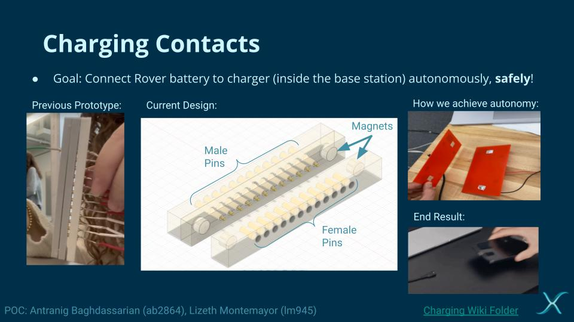

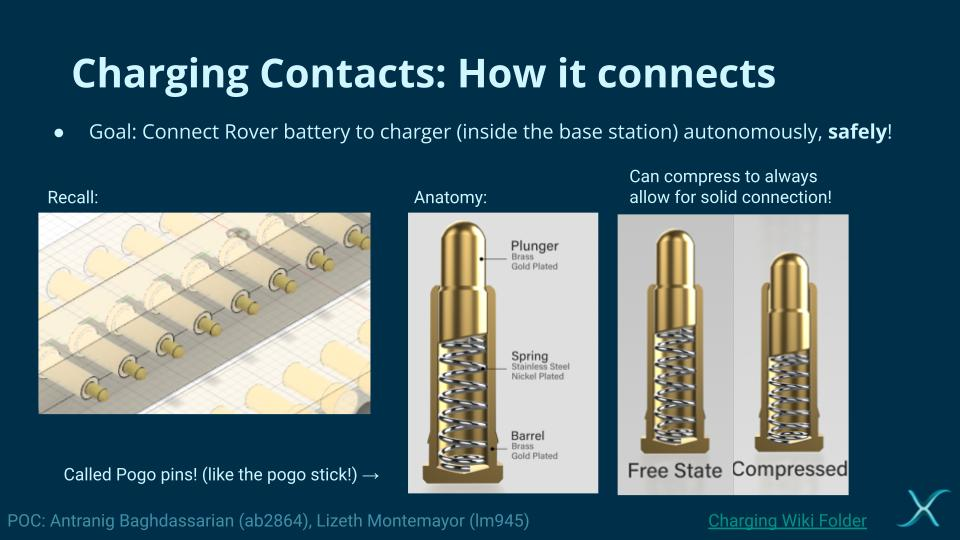

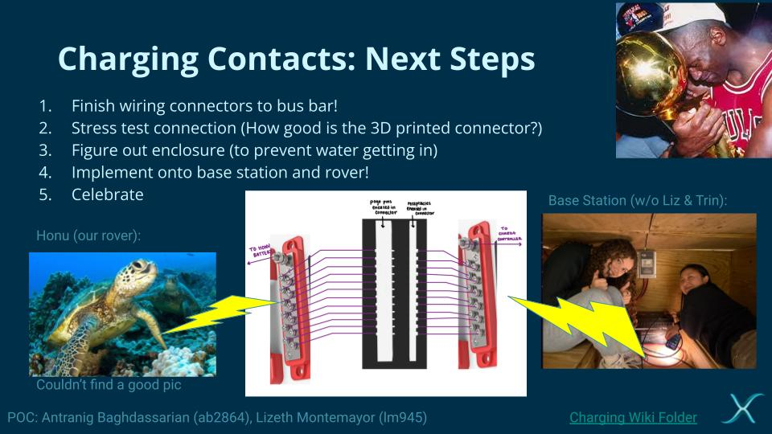

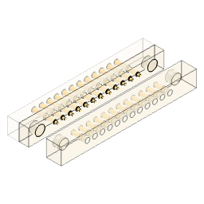

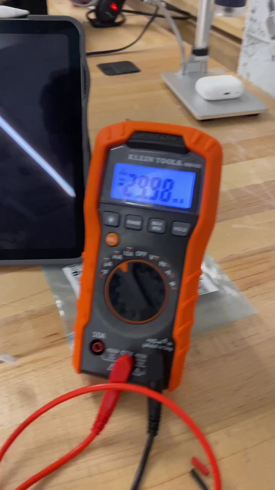
Solar charging and the base station
I sourced and wired the relays, wired the MPPT charge controller, and selected and bought the base-station battery. The panel and MPPT controller had already been purchased. I also researched controller connection order and relay sequencing. The full system was integrated and worked.

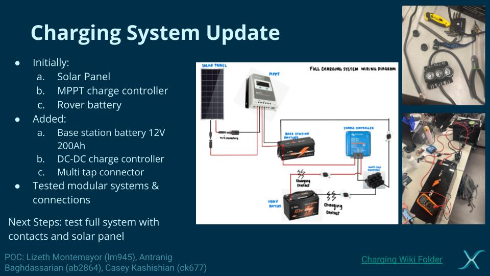

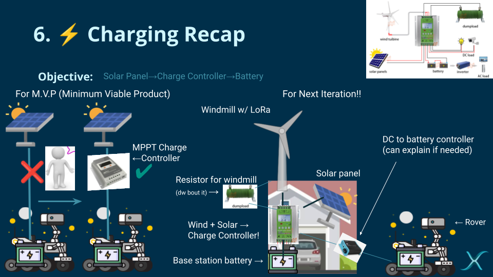

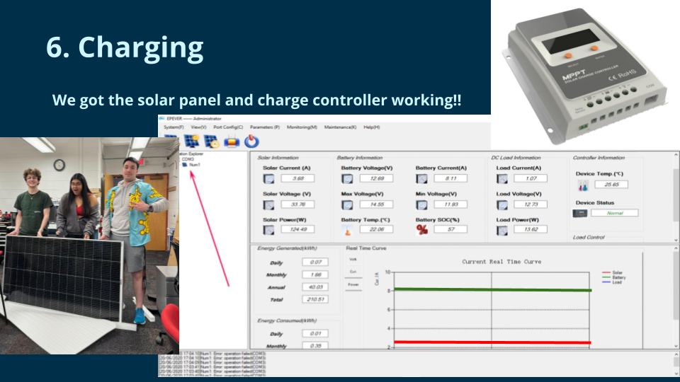

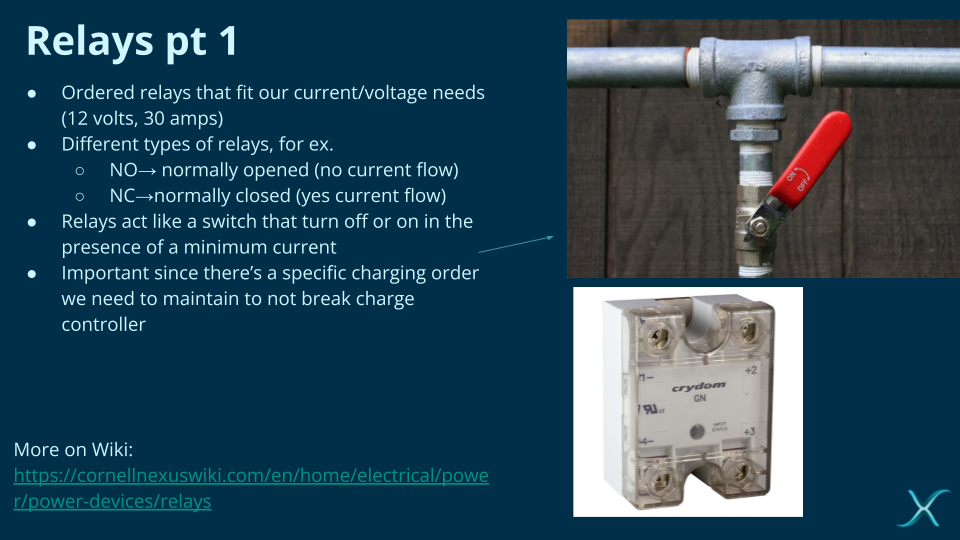
Motor and encoder integration
The video above shows the rover driving and turning on a sand court, from the team’s Fall 2025 info-session presentation.
I wrote the rover’s motor functions, including steering left and right and controlling clockwise/counterclockwise motor rotation. Those functions were integrated into ROS and called when the motors needed to move. I documented the parameters and how to use the functions so the next team could take over.
The surrounding work involved Raspberry Pi, Python, GPIO, soldering, and SSH, alongside motor/encoder integration. The videos and diagrams below document the work.

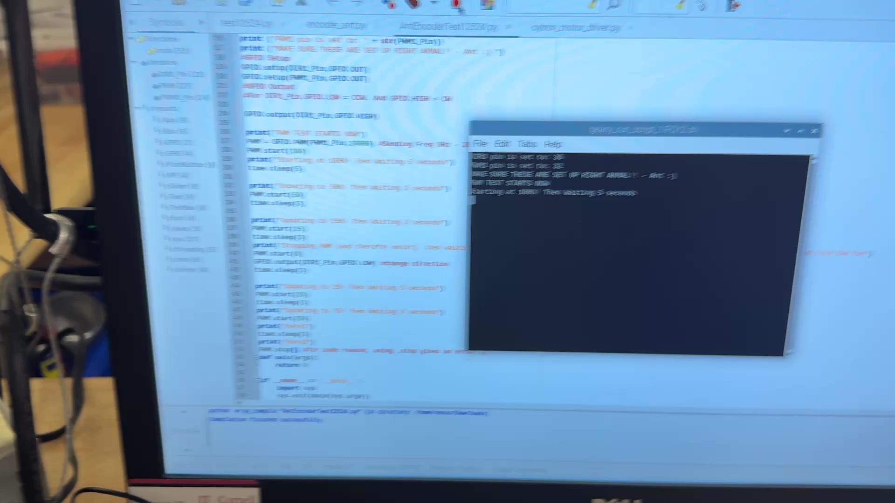

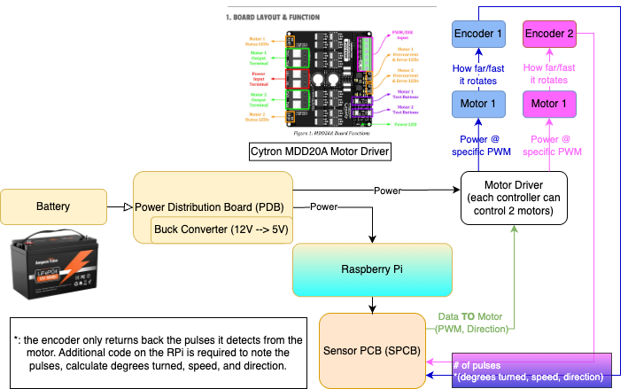

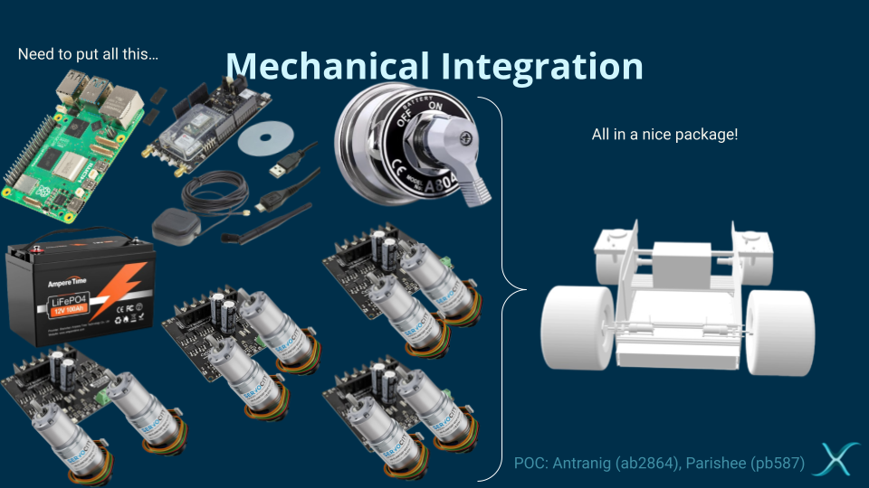

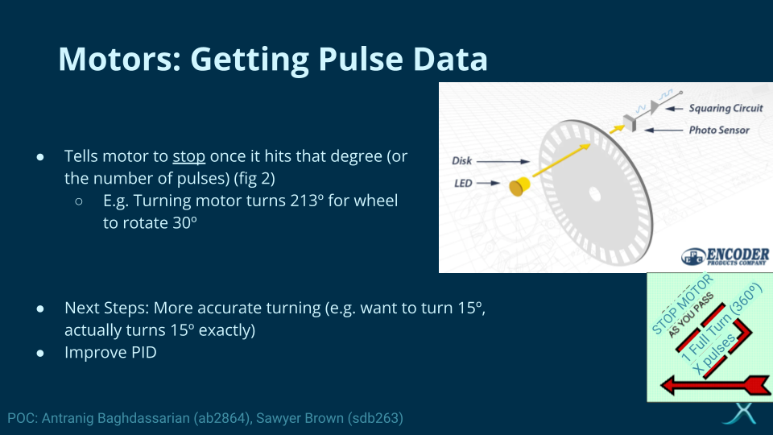
Electrical leadership and onboarding
I joined Nexus in Spring 2024 and served as electrical subteam co-lead from Fall 2024 through Spring 2025. Fall 2025 was my last active semester. I am still available for questions.
As co-lead, I helped coordinate meetings, deliverables, and cross-team work, including bridging gaps in technical knowledge between subteams. I personally delivered onboarding to 10 new members across three terms: two in Fall 2024, four in Spring 2025, and four in Fall 2025. I also collaborated on hands-on Arduino onboarding materials involving sensors, PWM, and circuit integration.
Charging contact design files
Fall 2025 design review slides and working CAD iterations from the charging-contact prototype.
Fall 2025 charging system and contact CDR slides (PDF) ↗
Motor-control testing with Python and serial output.
Workbench electrical testing.